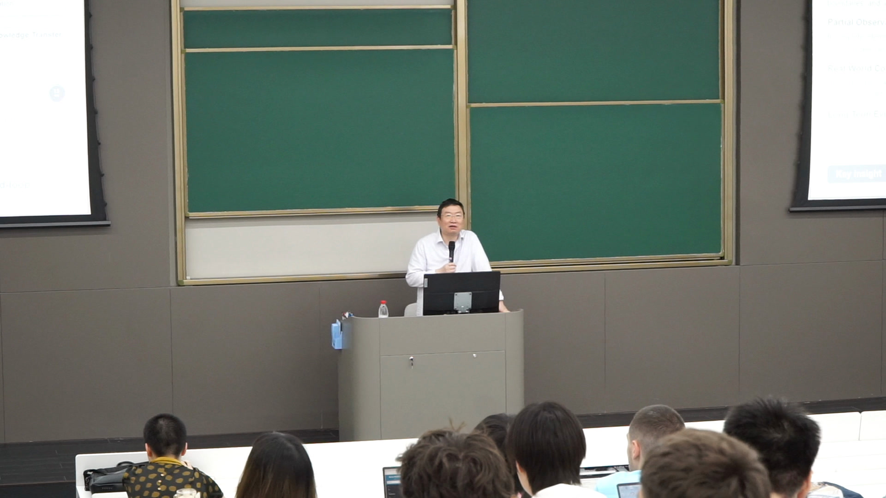
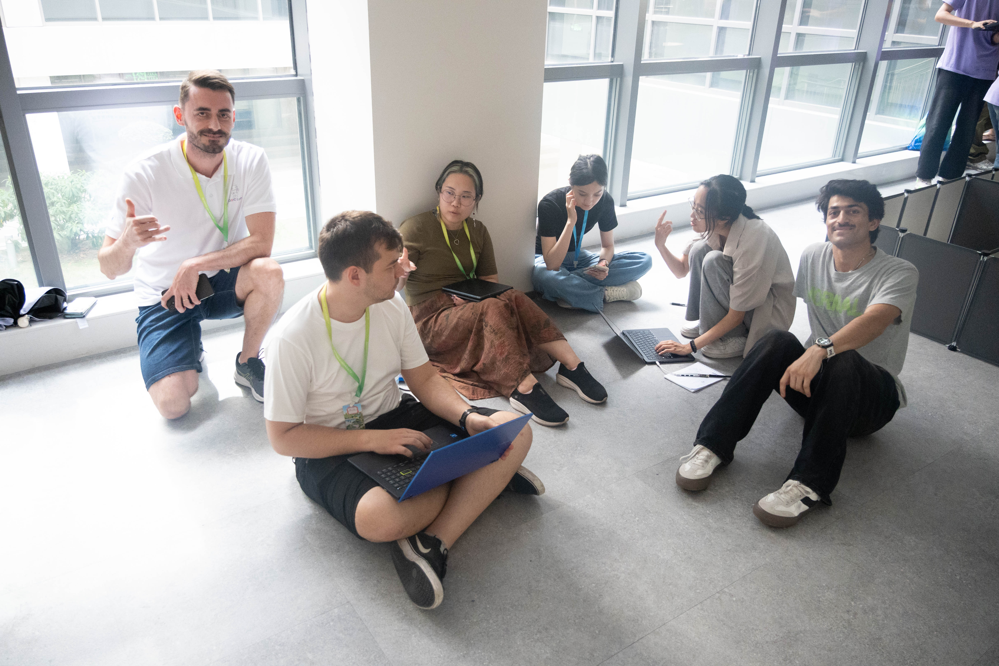
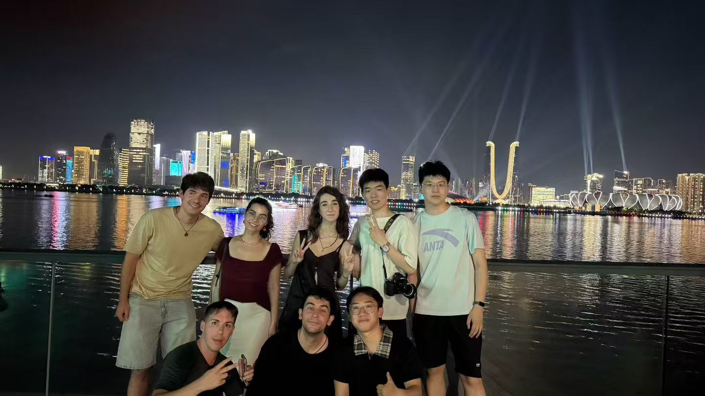

历年高光
2026 暑期学校
鸣谢
感谢课程教师和助教团队在课程准备、现场指导、安全保障和学生项目评审中的支持。

课程与竞赛高光



获奖项目飞行记录
获奖证书


花絮





学员访谈
访谈内容摘要
1. 请介绍自己以及在团队中的主要职责
受访学员来自中国、巴西、西班牙、巴基斯坦等不同国家，专业背景包括计算机科学、软件工程、电子工程、数据科学和机器人技术等。
团队内部的职责分工较为明确：
- 根据测试结果规划飞行路线并向队友提供坐标；
- 负责无人机部件装配、硬件检查和电路相关工作；
- 操作终端、运行程序并支持无人机代码调试；
- 负责软件开发和任务逻辑实现；
- 快速学习新的技术内容，再向其他组员讲解；
- 协调组内工作，将不同成员的成果整合到最终任务中。
虽然每个人承担的重点不同，但实际实验中硬件、代码、路线设计和现场调试需要持续配合，团队成员的职责也会相互交叉。
2. 参加课程前，你对无人机、Python 或机器人技术有多熟悉？
多数受访者此前已经接触过 Python。一些同学具有多年编程经验，使用 Python 完成过机器学习、数据分析或其他项目；也有同学接触过 Arduino、ROS 或基础机器人项目。
但真正有无人机项目经验的人并不多。很多学员是第一次把已有的编程知识应用到真实无人机上。他们发现，课程的难点并不只是编写 Python 代码，而是理解代码如何控制无人机、坐标如何转化为运动，以及真实设备为什么没有完全按照程序设想执行。
因此，这门课程对不少学员来说，是从“会编程”走向“能够控制真实系统”的第一次实践。
3. 哪个实验给你留下的印象最深？为什么？
最多学员提到的是最后的综合任务和小组竞赛。主要原因是它将前期学习的传感器、建图、坐标控制和路径规划整合到一个真实任务中，同时还加入了时间和竞争因素。
一些学员特别提到：
- 调整无人机速度后，它仍能沿同一条路线飞行；
- 在有障碍物的环境中规划路线并尽快完成任务；
- 建图实验为后续无人机控制和路径规划打下了基础；
- 最终任务看起来只是让无人机沿路线飞行，实际却受到起飞位置、稳定性、传感器和环境误差等多种因素影响。
学员普遍认为，竞赛不仅检验了代码是否正确，也检验了团队能否把前面分散的知识真正组合起来。
4. 团队遇到的最大挑战是什么？你们如何解决？
受访者提到的挑战主要包括以下几类。
第一类是设备连接和传感器延迟。无人机与计算机连接后，有时会出现数据延迟或通信不稳定。部分团队通过重新连接、重启无人机和重复测试恢复正常状态。
第二类是起飞位置和飞行误差。即使代码和坐标相同，起飞点稍有偏差，也可能导致后续路线逐渐偏离，甚至发生碰撞。团队通过固定起飞位置、反复校准和多次试飞减少误差。
第三类是机体状态变化。更换部件或重新装配后，无人机可能出现重心变化和飞行不平衡，原来的坐标不再适用。团队开始结合传感器反馈调整运动，而不是只依赖预设坐标。
第四类是真实环境与仿真的差异。实际飞行会受到稳定性、环境和设备状态等因素影响。团队需要观察每次执行结果，再调整路线、参数和代码。
第五类是跨语言沟通。部分小组成员来自多个国家，英语并非所有人的母语，口音和表达方式也不同。大家通过英语交流、翻译工具、任务演示和明确分工逐步解决沟通问题。
5. 你从课程中获得了哪些重要知识或能力？
技术方面，学员主要掌握了：
- 如何使用程序控制无人机；
- 如何读取和利用传感器数据；
- 坐标、路线和无人机运动之间的关系；
- 如何规划路径并在真实环境中进行调试；
- 如何根据飞行结果修改代码和参数。
有团队还针对反复手动计算坐标的问题，设计了一个可以放置目标点并自动生成坐标的界面，提高了路线调整效率。
方法方面，学员认为最大的收获之一是快速原型和迭代：先提出方案，进行测试，根据错误修改，再重新尝试。错误不再只是失败，而是帮助团队理解系统和加快学习的重要信息。
个人能力方面，学员重点提到了团队合作、跨文化沟通、主动查找资料、使用数据库或 AI 工具解决问题，以及在需要时主动向老师和同学寻求帮助。
6. 你会向其他同学推荐这门课程吗？为什么？
受访学员整体持肯定态度，并表示愿意推荐这门课程。
他们认为，课程的价值在于实践性较强。学生能够直接看到程序如何影响真实无人机，而不只是停留在代码或仿真中。虽然课程具有一定挑战性，但完成实际任务后会获得明显的成就感。
国际化的团队环境也是重要原因。学员不仅完成了无人机项目，还认识了来自不同国家的伙伴，在合作过程中建立了友谊，并积累了跨文化项目经验。
7. 如果重新完成挑战，你最希望改进什么？
学员提出的改进主要集中在技术方案和任务策略两个方面。
技术上，有学员表示之前过度依赖预设坐标。如果重新完成任务，会同时使用传感器和坐标信息，使无人机能够根据实际环境进行调整。
策略上，一些团队认为自己在比赛中采用了“出现问题再修补”的方式。如果重新开始，他们会提前设计更清晰的代码结构和整体方案，制定更具适应性的长期计划，减少后期反复修改。
师生合影与课程寄语